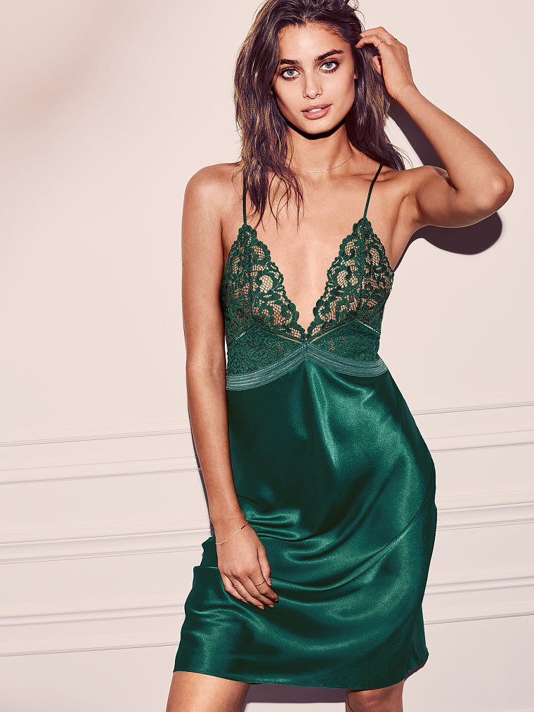

category explanations
bag - any kind of purse or handbag
belt
cardigan - open sweater
coat - winter coat generally to knee or below - not part of a suit
dress
eyewear - glasses, sunglasses etc
footwear - sneakers, heels, boots etc
hat
jacket - winter gear gnerally to waist - not a suit jacket
jeans
pants
shorts
skirt
stocking - not socks but rather close-fitting leg garment
suit - only for blazer and matching suit pants
sweater - closed garment, cardigan is a separate category
top - shirt, blouse, tshirt etc
scarf
womens_swimwear_bikini
womens_swimwear_nonbikini
overalls
sweatshirt - including hoodie
bracelet
necklace
earrings
watch
mens_swimwear
lingerie - anything not under bra/panties - garter etc

blazer - suit jacket (only when appearing along without matching suit pants)
legging - tightfitting leg garment
tracksuit
mens_underwear
vest - either part of a suit or a kind of jacket
panties
bra
socks
shawl - piece of fabric worn over shoulders/head
sarong - long cloth wrapped around body
robe
pyjamas
poncho - single large sheet with opening for head
tie
socks
hair
skin
face